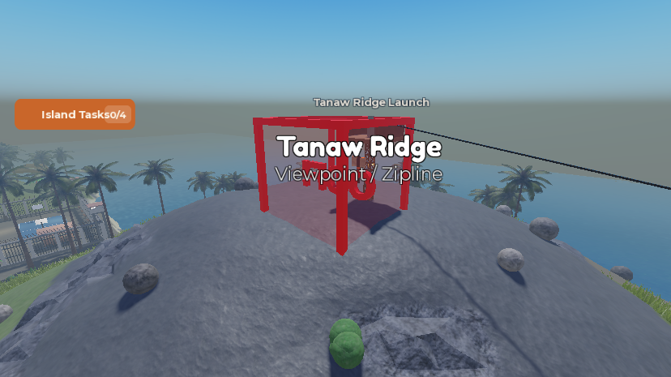
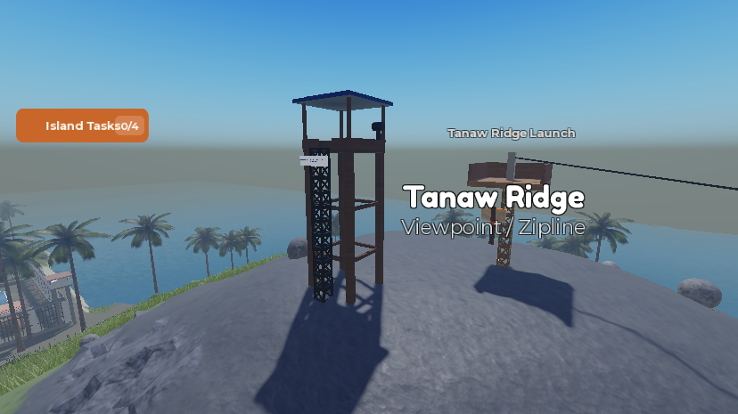
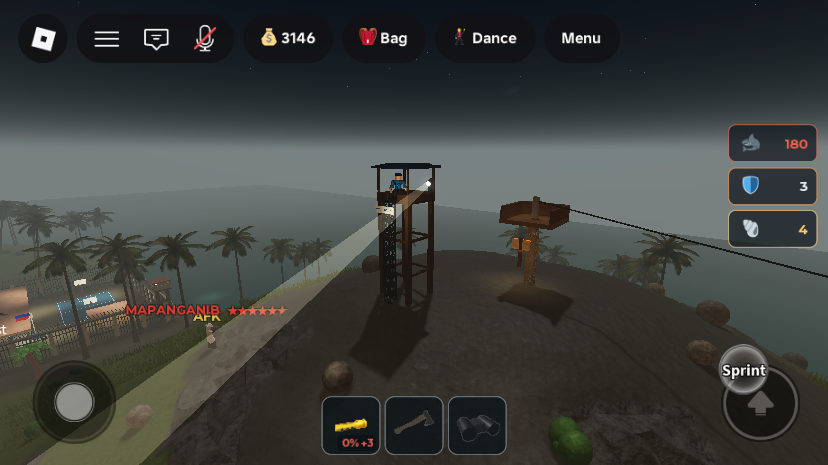

Phases F + G: the ronda, police that search, stars that bring more police, and the Bantay Tanaw watchtower
What was asked
- Item 7 — "ronda police 2 humanoid, checking of bad player, if you get spotted equipping an axe you get a warning, 3 warning and they will start capture you, if they saw you open a tolda stall, they will raid your post and confiscate your items". The user chose: a warning any time the axe is seen equipped, and the count resets after a while with no new warning.
- Item 14 — "police to be sneaky use tree or wall so player will not notice it, or if player notice the police it will be creepy".
- Item 16 — police spot at a distance with a clear line of sight, including while coming from the station, and chase. Losing the player means running around the last-seen area for 5 attempts, then going back.
- Item 17 (the police half) — more stars means more police. Instead of motorcycles (dropped by the user), they run faster.
- Item 18 — a police watchtower on Tanaw Ridge that players and police can use, with a spotlight that tips off other police about the last-seen location, so players must avoid its line of sight.
All of Phase F lives in ServerScriptService.PoliceUnit, which already had officers walking out of the station to a crime, chasing any Wanted player they could see (taser, cuffs, escort to the Piitan gate) and giving up at the scene. The ronda reuses that machinery rather than being a second AI.
1. The ronda (items 7 and 14)
- Always two on rounds. A loop keeps
RONDA_COUNT = 2officers namedRondaout (they count towardMAX_UNITS, now 8). A ronda that books a prisoner goes home like any officer and is replaced within seconds. They have no floating name. - Cover. At load the module collects the island's palms as cover spots: the 202
IslaMarahuyo.Scatter.Palmparts plus the bigFoliage.Palm_*models, ground-checked and above water. Rounds go tree to tree atRONDA_SPEED = 9. 60% of the time the next tree is one about 30 studs from the nearest player, and the officer stands on the far side of its trunk from them, then waits thereLURK_MIN..LURK_MAX = 5..10s facing that player. Trees are 25–130 studs apart. - Creepy when noticed. A player within
STARE_RANGE = 35, whom the officer can see and who is facing it (look direction within about 30°), gets stared at: the officer turns to face them and stands still forSTARE_SECONDS = 3, taking a couple of slow steps toward them at the end, then moves off to another tree. At most once per player every 20 s. - Axe warnings. Anyone in a ronda's line of sight (
RONDA_SIGHT = 80) with the Axe equipped gets a warning, at most one perWARN_DEBOUNCE = 15s: "RONDA: Ibaba mo 'yang palakol -- put the axe away. Warning N of 3." The count resets afterWARN_COOLDOWN = 120s without a new warning. The third warning makes them Wanted (new crimeaxe: "Kept carrying an axe after three warnings from the ronda.") and that ronda officer chases them itself.Player.RondaWarningsshows the current count. - Raids. An open tolda in a ronda's line of sight gets walked to (at speed 14) and raided through the new
ServerStorage.RondaRaidBindableFunction inBlackMarketService. The tent and stock are confiscated, nobody gets a cut, and the owner is told "The ronda raided your tolda". If the owner is standing at it (within 26 studs), they are also reported (tolda) and that ronda chases them.
2. Spotting, and searching after losing sight (item 16)
- Already there and kept: officers walk out of the station to a report, and on the way they take on any Wanted player they can see. Line of sight is a head-to-head raycast ignoring other officers.
SIGHT_RANGEwent from 90 to 120.- New search. Out of sight of their target, an officer runs (
RESPOND_SPEED = 24) to where the target was last seen, or to the crime scene if it never saw them, then to random spots withinSEARCH_RADIUS = 30of it. Each spot counts as one try, and so doesSEARCH_SPOT_SECONDS = 12without reaching it. AfterSEARCH_TRIES = 5it gives up on that target: a station officer goes home to the station and a ronda goes back to its rounds. "Go back to prison" was read as back to base; officers live at the station, and the Piitan is only where prisoners are delivered. Seeing the target again at any point restarts the chase.
3. Stars bring more police, running (item 17)
ReportCrimesends1 + floor(stars / 2)officers for the offender (1, 1, 2, 2, 3, 3, 4 for 0–6 stars), counting any already on them, withinMAX_UNITS.- Chase speed by the target's stars,
CHASE_SPEED_BY_STARS: 16, 16, 18, 18, 20, 22, 24 (a player runs 16). The flatCHASE_SPEEDconstant is gone. No vehicles.
4. Police escort: same ankle drag as the Health Post
The police escort used the same close, torso-height drag (DRAG_OFFSET, the body pressed behind the officer) that item 1 asked to remove from the hospital. It now uses the Phase A ankle drag: face up, feet at (1.6, -1.0, 0.9) by the officer's right hand, the body fitted per avatar, tilted 104°. This was not in the user's list; it was changed for the same reason as item 1.
5. Bantay Tanaw, the Tanaw Ridge watchtower (item 18)

Watchtower_TanawRidge, an AI-generated red translucent box with an "OOF!" mesh in it. Nothing in it collided, it sat half underground, and it was not climbable.
- retired
Structures.Watchtower_TanawRidge→ServerStorage._Retired.Workspace_Structures__Watchtower_TanawRidge. - new
Structures.BantayTanaw(29 parts) centred on (103, 87.3, −203): four braced legs, an 8.8×8.8 deck at y 108.6 (about 21 studs above the summit) with rails, a blue roof, and a climbableTrussPartladder up the north face into a gap in the rail. Anyone can climb it. It has a "BANTAY TANAW • PULIS" sign and a spotlightLamp(lens facing its −X side,SpotLightSpot,BeamStartattachment) on a mast at the south-east corner. It stands clear of the zipline station at (122, 103, −227). - new
ServerScriptService.WatchtowerService:- Idle: the lamp sweeps the island (0.35 rad/s, dipped 0.3 below the horizon) with a visible light shaft (
Beamto a hiddenBeamEndwhere the light lands). - Spotting: every 0.25 s it looks for Wanted players whose head it can see within
SIGHT_RANGE = 220studs, with nothing solid in between. The nearest one gets the light locked on them, brighter. - Tip-off: every second it calls
PoliceUnit.TipOff(player, position). Their Wanted clock is kept at least 15 s long, and every free officer, plus any already on them, gets that spot as the last sighting and runs there; a searching officer restarts its search there. The player is told every 8 s: "The Bantay Tanaw spotlight is on you -- every pulis knows where you are. Get out of its sight." - Lookout: an anchored pulis ("Bantay", a clone of
PoliceAssets.Officerwith its tools removed) stands on the deck and turns with the light.
- Idle: the lamp sweeps the island (0.35 rad/s, dipped 0.3 below the horizon) with a visible light shaft (

All changes
| Path | What | |
|---|---|---|
| edited | ServerScriptService.PoliceUnit | ronda (cover points, nextCover, lookAround, warnAxe, rondaStep, the keep-two loop), search state, star-scaled dispatch and chase speed, SIGHT_RANGE 120, MAX_UNITS 8, canSee(unit, player, range), M.TipOff, ankle-drag escort, REASONS.axe |
| edited | ServerScriptService.BlackMarketService | confiscate(nil, tent) for the ronda; new ServerStorage.RondaRaid BindableFunction |
| new | ServerScriptService.WatchtowerService | spotlight, tip-offs, lookout |
| new | Workspace.IslaMarahuyo.Structures.BantayTanaw | the tower |
| retired | Structures.Watchtower_TanawRidge | the old placeholder |
New attribute: Player.RondaWarnings. New crime kind: axe. New server-side bindable: ServerStorage.RondaRaid.
How it was tested
- Ronda spawn: both
Rondaofficers came out of the station a few seconds after the server started. There were no errors in the console, and the startup log reads "[WatchtowerService] Bantay Tanaw lit -- 220-stud line of sight, tips the pulis off every 1s". - Axe warnings → arrest: standing near a ronda with the axe out gave warning 1 at 0.5 s and warning 2 at 15.9 s. At 31.2 s the player became Wanted for
axe. With 4 prison stars, 2 more officers left the station (3 in all:1 + floor(4/2)) at speed 24. The ronda tased, cuffed and dragged the player (the new ankle drag) to the Piitan: a 20-minute booking, the 5th offence. - Raid + spotlight: pitching a tolda about 20 studs from a ronda, the client saw, within 6 seconds: "Tolda pitched", then "The ronda raided your tolda -- the tent and 0 Peso of goods, all gone.", then "You were seen...", then "The Bantay Tanaw spotlight is on you...", "A pulis put you down", "You're cuffed", and the booking. So the raid, the caught-in-the-act report, the tower spotting a Wanted player and
TipOffall fired together. - Bugs found and fixed while testing: (1) The stall-sight ray was blocked by the owner standing on the stall, so there was no raid in 45 s. Player characters are now ignored for that ray. (2)
local ownerId, present = raid and raid:Invoke(model)dropped the second return value, so an owner standing at the stall was never reported. It is now two statements. (3) A ronda standing where no palm was 25–130 studs away (near the station and Piitan) never left.nextCovernow falls back to the nearest palm beyond 25 studs. - Rounds after fix (3): a 40 s sample, one letter per second (m moving, . waiting):
.............................mmmmmmmm...and.mmmmmmm......mmmmmmmmmm................. Both left their first tree, and both waited near palms between walks.
Not verified / known gaps
- Waits run long: in the sample above one ronda stood 29 s before its first walk and another 16 s between walks, against the 5–10 s lurk. It is probably re-pathing out of tight spots (spawning inside the station, walls around the Piitan). Not investigated further.
- The stare was not seen directly. It triggers when a player within 35 studs faces the officer. Its numbers (distance, facing test, 3 s, the slow creep) are untested by eye.
- The 5-try search was not watched through to the give-up: every chase in testing ended in an arrest within seconds, because the test player stood still. Try running out of sight of an officer and watch it search 5 spots, then head home.
- Officers only run at 24 while responding or searching. Chasing someone in sight uses the star table (16–24), so a 0–1 star player can still outrun them at 16.
- The tower spots only Wanted players. Anyone else in its light is ignored, and its tip-offs keep a spotted player Wanted for at least 15 s more.
- A tolda raid reads "0 Peso of goods" when the rack is empty; the stall itself is still lost.
- With two ronda always out,
MAX_UNITSleaves 6 officers for crimes, the same as before the ronda existed. - Needs 2 players: the ronda warning someone else, one player watching another get dragged, and the tower light following a second player.